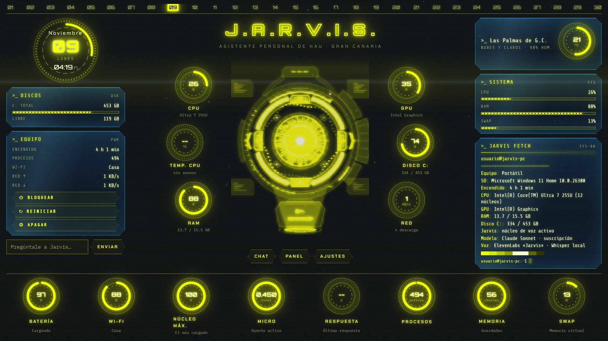

«¿Qué pasa, Jarvis?» y hablas. Sin teclado, sin ventanas, con el micro de los auriculares. Le puedes interrumpir mientras habla.
Lo que pides hacer lo encarga a Claude Code con todos tus MCP, conectores, skills y tu Chrome. Te avisa al terminar.
La voz y las tareas usan tu plan de Claude Pro o Max. Ni un céntimo de API de pago por uso.
| «¿Qué pasa, Jarvis? ¿Qué tengo mañana?» | Lee tu Google Calendar (solo lectura) y te lo cuenta en una frase. |
| «Organiza la carpeta de Descargas» | «Me pongo con ello». Claude Code lo hace en segundo plano y Jarvis te avisa. |
| «En el proyecto de LinkedIn, prepara el post de hoy» | La tarea arranca dentro de esa carpeta, con su CLAUDE.md, memoria y skills. |
| «Envía el correo a…» | Lo prepara y te pide permiso: «¿Lo hago?». Sin tu «sí», no sale nada. |
claude -p siempre abiertosin MCP · 3 herramientas«Borra los PDF viejos de Descargas».
Lo prepara todo, pero no borra: termina con CONFIRMAR: borraré 12 PDF de 2024.
«Antes de seguir necesito tu permiso. Borraré 12 PDF de 2024. ¿Lo hago?»
«Sí». El script reanuda la misma sesión con una marca que solo él puede poner.
«Ya está. He borrado 12 PDF».
El script solo acepta un «sí» para un permiso que Jarvis ya te ha preguntado, de esa sesión, reciente y de un solo uso: una web con una inyección de prompt no puede pedir una acción nueva «ya confirmada».
Whisper corre en el PC. Lo que el micro oye sin «Jarvis» no se guarda: solo nº de palabras y volumen.
El modelo de voz solo puede usar agenda, encargar, WebSearch y WebFetch. Todo lo demás se deniega.
Los procesos se lanzan sin ANTHROPIC_API_KEY ni Bedrock/Vertex: siempre la sesión de claude.ai.
El conector de Google pedía Gmail con borrado, Drive y Contactos. Ahora: calendar.readonly.
API y HUD en 127.0.0.1. Apagar o reiniciar solo desde el origen del HUD, con 30 s para cancelar.
Datos personales en usuario.toml, claves en variables de usuario y escáner de secretos antes de cada commit.

aplicar-overlay.ps1uv sync, openWakeWord y npm installdata/usuario.tomldocs/INSTALACION.md
github.com/ndoreste/
jarvis-claude-voice